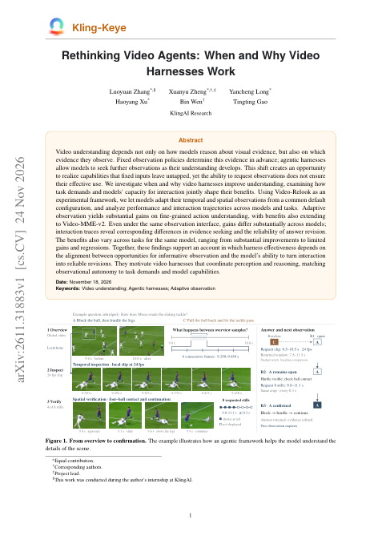
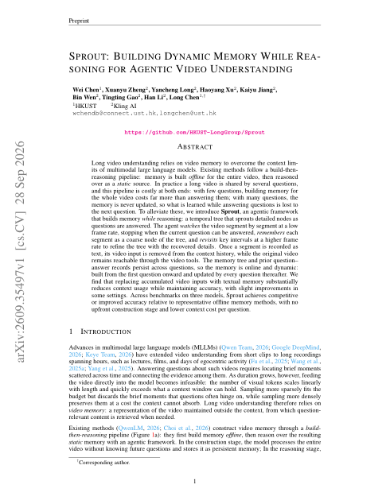
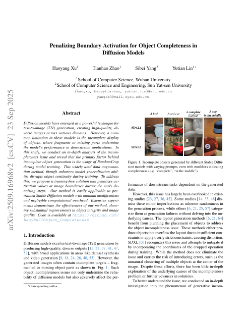

Biography 个人简介
我是许浩阳，目前在武汉大学 计算机学院攻读计算机科学硕士，预计于 2027 年 6 月毕业。本科就读于武汉大学信息安全专业，于 2024 年毕业。
I am a master's student in Computer Science at Wuhan University, where I received my bachelor's degree in Information Security in 2024. My research focuses on controllable visual generation, multimodal video understanding, and video agents.
目前在快手 Keye 团队参与多模态大模型研发，曾在阿里巴巴通义实验室 Qwen-Agent 组实习。
Research Interests 研究方向
我的研究围绕视觉生成、多模态理解与智能体展开，主要包括：
可控图像生成 · Controllable Image Generation视频生成 · Video Generation多模态视频理解大模型 · Multimodal Large Language Models for Video Understanding视频智能体 · Video Agents for Understanding and GenerationPublications 学术论文
VibeVideoAgent: Closing the Perceptual Loop for Code-Driven Video Generation Xuanyu Zheng, Luoyuan Zhang, Yancheng Long, Haoyang Xu , Muxi Diao, Yuzhe Chen, Kaiyu Jiang, Bin Wen, Tingting Gao
arXiv preprint, 2026
[paper ]

Rethinking Video Agents: When and Why Video Harnesses Work Luoyuan Zhang, Xuanyu Zheng, Yancheng Long, Haoyang Xu , Bin Wen, Tingting Gao
arXiv preprint, 2026
[paper ]
VideoNexus: Video Perception Beyond the Reasoning Context Yancheng Long, Xuanyu Zheng, Wei Chen, Luoyuan Zhang, Haoyang Xu , Bin Wen, Tingting Gao
arXiv preprint, 2026
[paper ]

Sprout: Building Dynamic Memory While Reasoning for Agentic Video Understanding Wei Chen, Xuanyu Zheng, Yancheng Long, Haoyang Xu , Kaiyu Jiang, Bin Wen, Tingting Gao, Han Li, Long Chen
arXiv preprint, 2026
[paper ]

Penalizing Boundary Activation for Object Completeness in Diffusion Models Haoyang Xu , Tianhao Zhao, Sibei Yang, Yutian Lin
International Conference on Computer Vision (ICCV), 2025
[paper ] [code ]
Precision³ Geometric Figure Editing
Precision³: Code-Grounded Geometric Figure Editing for Unified Models Haoyang Xu , Jianghao Wang, Ruoyu Wang, Wei Deng, Daiguo Zhou, Jian Luan, Yu Wu
AAAI 2027 · Under review / 在审
Manuscript under review
Education 教育经历
武汉大学 · Wuhan University 2024.09 – 2027.06（预计） 武汉大学 · Wuhan University 2020.09 – 2024.06 · GPA: 3.85 / 4.0 Experience 工作与实习经历
快手 · Keye Team 2026.07 – 至今 多模态大模型算法研究员（实习）
参与 Keye-VL 视频多模态基模训练，构建高质量对齐数据，提升多模态感知与长视频空间定位理解能力。 探索生成式空间推理奖励与后训练强化学习，改进细粒度视频感知并降低感知幻觉。 构建结构化视频表征，增强机位、场景与音频的同步理解；搭建基于代码执行的可验证视频推理流程。
阿里巴巴 · 通义实验室 2026.05 – 2026.07 Qwen-Agent 组 · 算法实习生
与 Wan 团队合作研发叙事类漫剧生成 Agent，通过 RAG 补充故事设定，改进人物、视觉形象与场景一致性，支持约 30 分钟连贯叙事生成。 开展视频细粒度理解、片段检索与自动剪辑，构建智能剪辑 Benchmark。 参与 Qwen-GUI 基模 Grounding 优化，构建思维链与世界知识增强数据，提升界面理解与元素定位能力。 Honors & Awards 奖项荣誉 2022 · 湖北省大学生程序设计竞赛，金奖（第一名）2022 · ICPC 亚洲区域赛（西安），铜牌2022 · ICPC 亚洲区域赛（合肥），铜牌2022 · CCPC 桂林站，铜牌© Haoyang Xu 许浩阳 | Last updated: Nov 2026